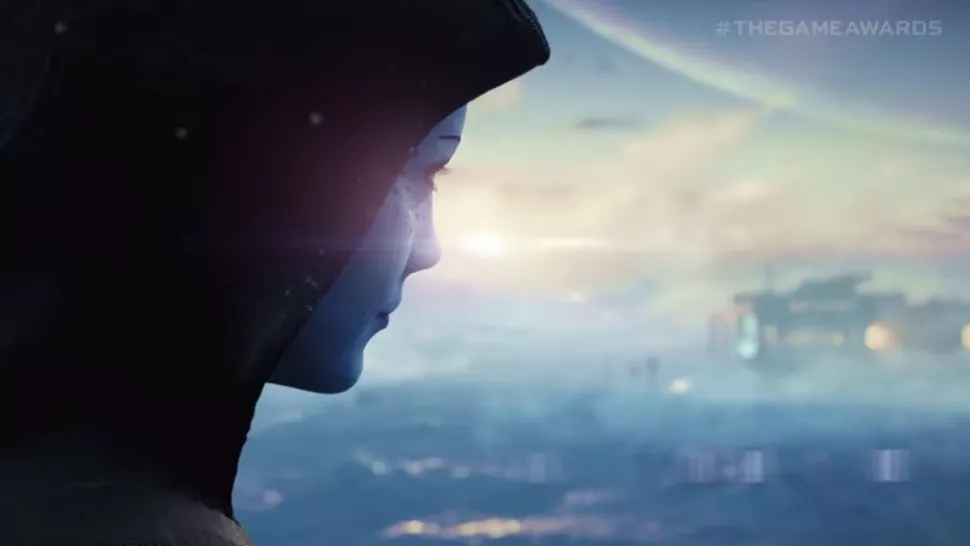
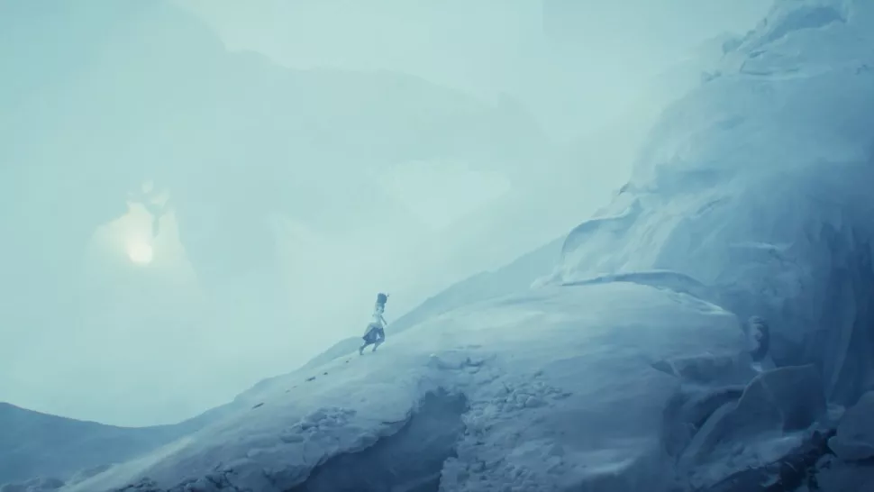
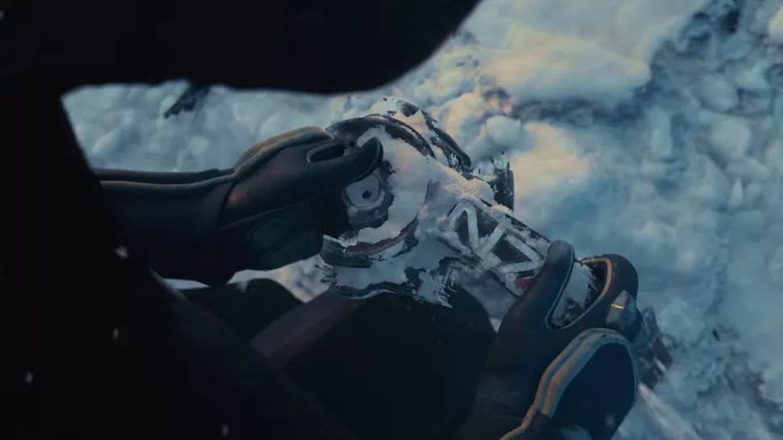
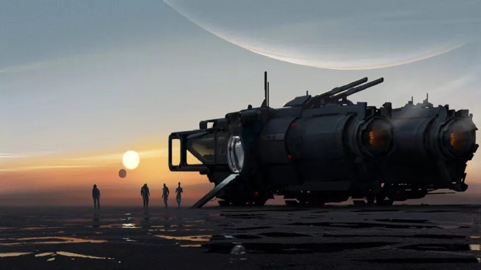
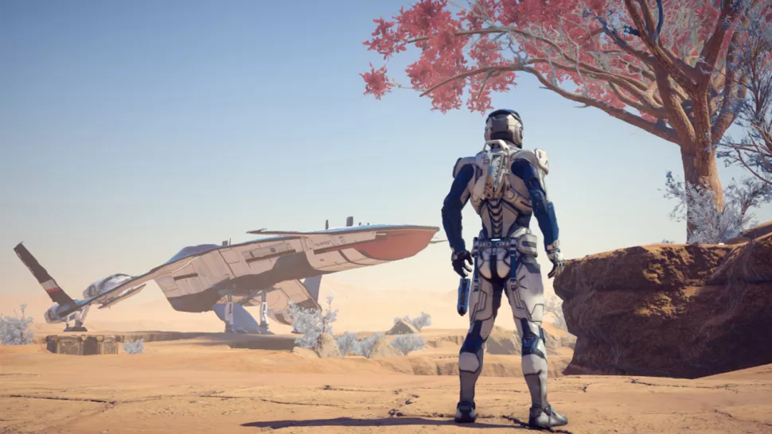
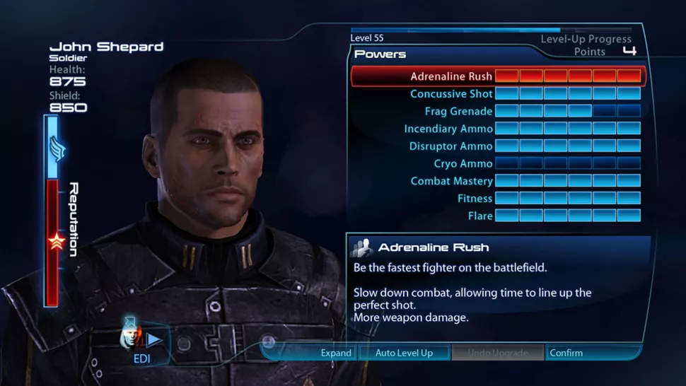
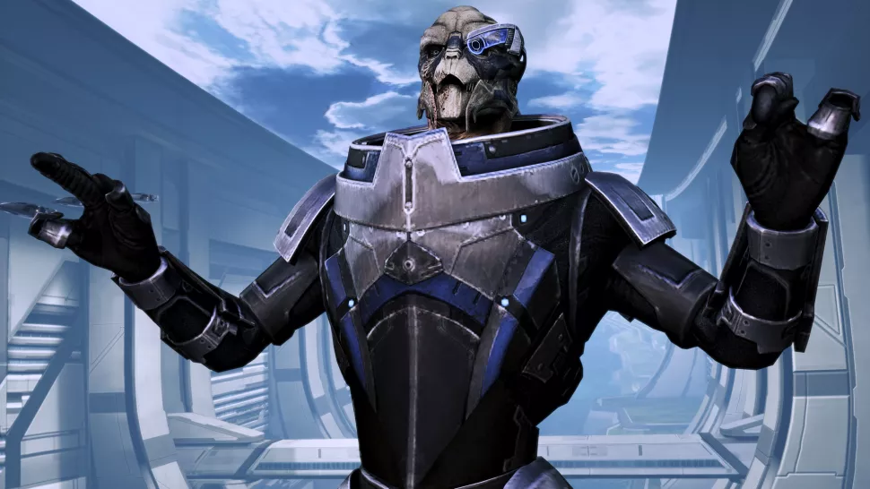

Mas recebe spin-off beat-em-up estilo Streets of Rage
Divulgação / Gamejolt
Segundo Scott Cawthon, desenvolvedor de Five Nights at Freddy's: Security Breach foi adiado, mas como prêmio de consolação lançou gratuitamente um beat-em-up estilo Streets of Rage, Security Breach: Fury's Rage.
Cawthon postou no Reddit de Security Breach na última quarta-feira (28) que "o começo de 2021 não é mais uma janela de lançamento viável", e que optou por dedicar mais tempo para lançar a sequência de Five Nights at Freddy's com a qualidade que ele deseja para o jogo.
Para não deixar a comunidade completamente desamparada, em um lançamento surpresa ele disponibilizou no site gamejolt.com o Security Breach: Fury's Rage, um beat-em-up side-scroller gratuito que, apesar dos personagens, Cawthon deixou bem claro que o nome do jogo não remete a "furry".
Five Nights at Freddy's: Security Breach foi anunciado em 2019 e segue sem data de lançamento, mas chegando para PC, PlayStation 4 e PlayStation 5.
Cyberpunk 2077 recebe mais uma atualização com correções de bugs
O patch 1.22 já está disponível gratuitamente para download
Autoria própria
CD Projekt Red anunciou nesta quarta-feira (28) a chegada do Hotfix 1.22, mais uma atualização para Cyberpunk 2077 para adicionar correções relacionadas a bugs e melhorias de estabilidade.
O patch já está disponível gratuitamente para download.
Alguns do erros corrigidos incluem bugs na aparência de Johnny Silverhand e outros que afetavam o progresso do jogador em missões específicas, como não poder interagir com um objeto importante e não conseguir usar elevadores. Além de melhorias de gerenciamento de memória e mais otimizações.
É possível conferir a lista completa clicando aqui.
Cyberpunk 2077 está disponível para Xbox One, PC e PS4, sendo que este último apenas em versões físicas.
Among Us chegará ao PS4 e PS5 neste ano com skin de Ratchet & Clank
Imagem: PlayStation/Reprodução
A PlayStation revelou, nesta quinta-feira (29), durante o evento State of Play, que Among Us chegará ainda este ano para o PS4 e PS5. O jogo será lançado para os consoles junto de uma skin especial de Ratchet & Clank. Veja, a seguir, as primeiras imagens sobre a novidade.
A skin será exclusiva para os consoles da Sony. Não foi informado, por enquanto, a data exata em que o título multiplayer chegará para as novas plataformas.No ano passado, a Microsoft já havia anunciado o jogo para Xbox One e Xbox Series X/S.
Apesar de ter sido lançado em 2018, o game se tornou um enorme sucesso no ano passado. Milhares de pessoas descobriram o título durante a pandemia e passaram a jogar com amigos e desconhecidos para tentar desmascarar o impostor.
Atualmente, Among Us está disponível para smartphones (Android e iOS) e PC.
Mass Effect 5: Tudo que sabemos até agora sobre a próxima aventura da BioWare
Aqui está tudo que sabemos até agora sobre o novo jogo de Mass Effect

Crédito da Imagem: BioWare
Um novo jogo da série Mass Effect foi anunciado, e embora não se chame oficialmente Mass Effect 5, ele irá supostamente seguir apartir da trilogia original. O último N7 Day deu para os fãs de Mass Effect em todo lugar a notícia que estávamos todos esperando desde o lançamento de Mass Effect: Andromeda: um novo jogo de Mass Effect está oficialmente a caminho. Junto do muito bem vindo anúncio de uma remasterização da trilogia original de Mass Effect que deve ser lançada na Primavera de 2021, a BioWare também lançou a notícia de que uma equipe veterana está atualmente trabalhando para nos trazer Mass Effect 5. Sim, as estrelas se alinharam e tudo deve ser calibrado, porque os de Mass Effect tem muito pelo que ansiar no futuro.
Enquanto a BioWare ainda está mantendo muito em segredo sobre a próxima entrada na franquia sobre exploração espacial, graças ao anúncio e à primeira imagem que foi lançada no N7 Day, temos algumas pistas para investigar. Reunimos todas as informações relacionadas a Mass Effect em um só lugar para que você possa ficar realmente estusiasmado com o retorno à essa série amada.
Durante o The Game Awards, a BioWare lançou o primeiro trailer para o próximo jogo de Mass Effect e Santa Liara T'Soni, foi um trailer e tanto. Com um pouco menos de dois minutos, os fãs foram rápidos para analizar cada segundo das filmagens mostradas para tentar decifrar o que poderia significar para o futuro da franquia. O diretor de projeto da BioWare, Michael Gamble, causou muita excitação quando postou no Twitter que "há muito para desempacotar", e a fanbase de Mass Effect explodiu com teorias interessantes sobre o que o trailer poderia estar insinuando.
Primeiramente, é possível ouvir o barulho muito reconhecível dos Reapers tocando durante a sequência de abertura. Mais tarde durante o trailer, fãs com olhos de águia também notaram que é possível ver a silhueta de um Reaper ao fundo, enquanto uma figura misteriosa (que é revelada como sendo a Liara) caminha através de uma paisagem nevada. Gamble confirmou que realmente vemos Reapers no trailer, por isso é provável que o que vimos são restos do que ficou para trás após o confronto final com Shepard em Mass Effect 3.

Crédito da Imagem: BioWare
A presença de Liara também é muito interessante. Há muita especulação em torno de se a área em que vemos Liara fica de fato na Via Láctea, já que ela descobre uma armadura N7. Algumas pessoas tem até especulado que ela está de fato na Terra, o que pode sugerir que a próxima aventura é uma sequel direta.
There's also a lot of substantial theories around the possibility that the next is in some way tied to Mass Effect: Andromeda. If it is, it could give us an idea of the timeframe the next adventure will take place in. Andromeda is set some 600 years after Mass Effect 3, and interestingly you can even listen to voice recordings from Liara in Andromeda - given her long life span, it would also make sense for her to still be knocking around long after Shepard.
The very first time Ryder takes off in the Tempest ship, "godspeed" is said to be over comms, which can be heard in the trailer. Gamble also confirmed on Twitter this was "intentional", which has also added more credence to the idea that the next adventure will be linked to Andromeda.
Prior to the release of the trailer, many believed it was connected to Andromeda because of the official artwork that was released on N7 Day in the blog post announcement. The concept art titled "Mud Skipper" shows the silhouette of four figures, one of which has the same build as the Angara, which is a race we first encounter in Andromeda. Could it actually be Jaal? There also appears to be a Salarian and Drell, but who they are is currently unknown. The very same image can be seen for just a moment when we see Liara turn and smile in the trailer, which suggests she could have been the fourth figure on the far left of the original image.
Who's making the new Mass Effect game?

Crédito da Imagem: BioWare
The new Mass Effect game is being made by a "veteran team" at BioWare. Shortly after the release of the teaser trailer, BioWare project director Michael Gamble highlighted some of the names returning to help create the next step in the franchise on Twitter.
For starters, Dusty Everman has rejoined the development team as a principal narrative designer. Gamble mentions that Everman was one of the key contributors when it came to bringing the Normandy ship to life and was previously a senior level designer at BioWare. Parrish Ley, who previously worked as a cinematic director for the Mass Effect Trilogy, is also returning to bring "his vision" to the new adventure, along with longtime BioWare programmer and technical designer Brenon Holmes and original Mass Effect art director, Derek Watts.
When will the new Mass Effect game be released?

Crédito da Imagem: BioWare
The question we all want an answer to is of course 'when we can expect to see the next Mass Effect adventure arrive?' Well, we probably won't be seeing an official release date for quite some time, especially considering BioWare is still in the early stages of development. What we can bet on is that we'll see it land on the Xbox Series X and PS5; just the thought of knowing we have a next-gen Mass Effect game in the pipeline is exciting, to say the least.
In the official BioWare blog post, it states that the team is "looking forward to sharing our vision for where we'll be going next." While we probably won't be seeing any big updates about the next game anytime soon, we'll certainly be keeping an eye out for any more news about Mass Effect 5's development going forward.
Mass Effect 5 wishlist: here are the features we’re looking for
Until we officially know more about Mass Effect 5, here's what we'd love to see from the next step in the franchise:
A more linear mission design
As so many games of recent years, Mass Effect Andromeda made the jump to an open-world structure. While you always had the option to travel around the galaxy and solve several side quests at your own pace, the entire story of ME Andromeda requires you to first go to a planet in the Heleus cluster and finish enough quests to raise the viability level of a planet before you can proceed with the plot. These tasks can get repetitive, and both planets and their settlements looked and felt mostly empty. By comparison, gathering your forces in Mass Effect 2 and 3 was an endgame activity, preceded by interesting plot developments. Mass Effect Andromeda has you doing the same things over and over before it lets you get on with the plot, draining the game of suspense. A less open word in the style of previous Mass Effect games would help tighten the plot, which would in turn allow for more interesting missions.
Make it Andromeda 2

Crédito da Imagem: BioWare
This one’s dividing the fanbase: about half of them want the next game to use Andromeda’s setting, the other half hanker for a return to the Milky Way. But acting as if Andromeda never happened would do all the work that went into it a disservice. While the story wasn’t different enough from the original Mass Effect trilogy to win most players over, it did leave open questions. A second part could explore conflicts between the different races after finally settling, or take a closer look at the Ryder family. Andromeda had interesting new alien races, and where the trilogy had several games to allow Shephard’s team mates to grow onto players, the Andromeda crew deserves a similar chance.
An overhauled morality system

Crédito da Imagem: BioWare
Andromeda did away with the Paragon/Renegade system of past games. Generally, we don’t think it a great loss, as the dialogue options always divided into good, rude and vaguely sarcastic even before the system was scrapped, but it would be nice to see a stronger emphasis on consequences. While Mass Effect 3 didn’t make the most of all the decisions you made throughout the series, as far as the games themselves were concerned, you felt the consequences of what you did in some situations quite keenly, for example whether or not you rescued the general of the Quarian flotilla. When it comes to meaningful decisions, there’s still a lot of room for Mass Effect to grow, and we’d like for Bioware to explore such options further.
The ability to control squad powers

Crédito da Imagem: BioWare
Mass Effect Andromeda has fun combat. Easily accessible to those who played a Mass Effect game before, it’s well comfortable in being a cover shooter, and thus didn’t look to innovate, but with the it added some interesting variety with the different combat profiles. Good enemy AI behaviour kept things sufficiently challenging, which can’t be said for your squad mates. Mass Effect team mates have never behaved optimally, but in prior games you make up for that by commanding them to use their powers. This feature is missing in Andromeda. Getting it back would round out the otherwise already great gameplay.